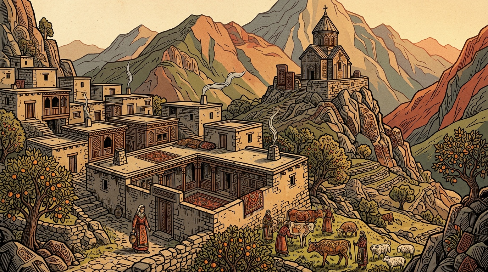
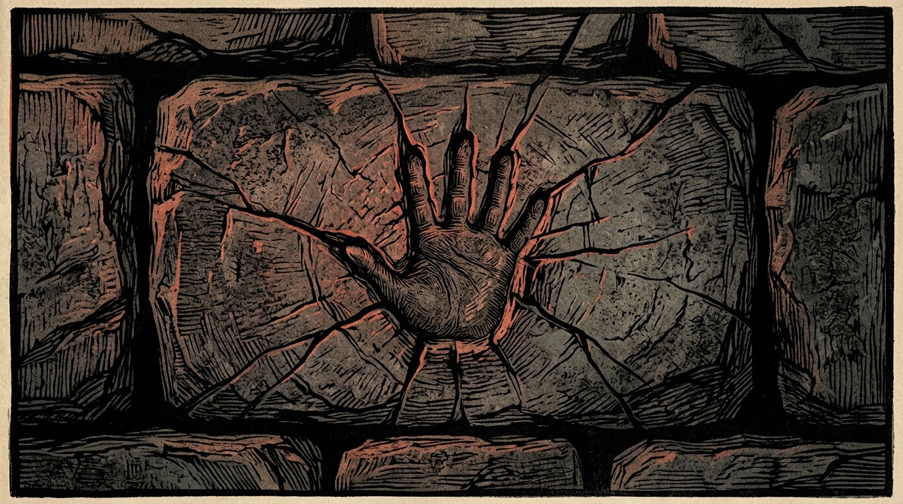

Сильная сторона
Вопрос понятен любому зрителю
Сила, которую не выбирал, и село, которое из-за неё боится, — история взросления, которую не нужно объяснять тем, кто эпоса не знает. Это ключ к международному зрителю.

Анимационный фильм в разработке · армянский эпос
ԴԱՎԻԹ ՍԱՍՈՒՆՑԻ
Тысячелетний эпос о мальчике, который слишком силён для своей деревни.
Главный вопрос фильма
Что делать с силой, о которой тебя никто не просил?
Синопсис · супергерой, которому тысяча лет
Давид — сын Мгера Старшего, сирота. Младенцем его увозят ко двору Мсра Мелика, правителя, который берёт с Сасуна дань. Мальчик возвращается домой и становится пастухом. Он не знает меры своей силы, и село его сторонится.
Он находит отцовские доспехи, меч и коня, восстанавливает построенное отцом и понимает, что эта земля его. Когда Мелик приходит за данью с войском, Давид выходит против него один.
Мир
Сасун — высокогорье Армянского нагорья: крутые хребты, глубокие ущелья, быстрые реки, дубовые леса и террасные поля. Зима долгая и снежная, лето короткое и яркое. Люди здесь упрямы, громогласны и свободны. Эпос зовёт их «црер», сорвиголовы.

Каменные дома с плоскими крышами поднимаются по склону ступенями.
Сложена близнецами из камней, которые обычному человеку не поднять.
Монастырь на вершине. Его построил Мгер Старший, восстанавливает Давид.
Гора Мгера с садами и охотничьими угодьями, отнятая у Сасуна Меликом.
Родник, из которого герои Сасуна пьют и набирают силу.
Противоположность Сасуна: плоская жаркая земля, город, дворец, войско.
Герой

Пастух, наследник, защитник. Одно лицо и одна пластика в каждом возрасте.
Сохранить героя узнаваемым во всех трёх возрастах — первая проверка пайплайна. Пример образа.
Близнецы, сыновья Цовинар, рождённые от воды. Основали Сасун.
Победитель льва. Отец Давида. Сажает сады и возводит церковь.
Сирота, ставший защитником Сасуна. Наш фильм.
Последний герой, затворённый в скале, пока мир не станет справедливым.
Противник
Правитель Мсыра берёт с Сасуна дань. Давид младенцем рос при дворе Мелика, поэтому их война — ещё и война внутри одного дома.


Первая сцена
Десять кадров, около девяноста секунд, по эпизоду детства из самого эпоса. Эту сцену делаем первой.
Рассвет над Сасуном. Дым над каменными крышами.
Маленький мальчик гонит сельское стадо в гору.
Полдень. Он спит, стадо разбредается.
Он просыпается и бежит. Склон дрожит под босыми ногами.
Зайцы, лисы, волк. Он сгоняет всё, что движется.
Крупно лицо. Гордость, ни тени сомнения.
 07
07Сумерки. Стадо входит в село вместе с дикими зверями.
Хлопают двери. Сельчане забираются на крыши.
Мальчик один на пустой улице, он не понимает.

10Отпечаток его ладони в гранитной стене. Затемнение.
Кадры 01, 07 и 10 — примеры образов. Остальные семь рисуются после утверждения стиля.
Разбор кинокоманды Neyra Vision
Сильная сторона
Сила, которую не выбирал, и село, которое из-за неё боится, — история взросления, которую не нужно объяснять тем, кто эпоса не знает. Это ключ к международному зрителю.
Сильная сторона
Волк и лисы в сельском стаде — комедия, а финал с ладонью в граните — тревога. Сцена за 90 секунд показывает весь диапазон фильма: юмор, силу и одиночество героя.
Решить
Главный технический риск. Нужна утверждённая карта персонажа: форма бровей, нос, линия волос, пропорции — и проверка на каждом кадре, а не в конце.
Решить
Чёрный контур при генерации «дышит» от кадра к кадру. Предлагаем закрепить толщину линии и анимировать «на двойках» (12 кадров в секунду) — дрожание станет приёмом гравюры, а не браком.
Предложение
Война «внутри одного дома» — самое сильное, что есть в синопсисе, но пока она только названа. Одна сцена-воспоминание о дворе Мелика сделает финальную встречу личной.
Предложение
Сасун держим в сланце, оливе и пергаменте, Мсыр — в киновари и охре. Когда войско входит в горы, красный впервые появляется в сасунском кадре. Цвет рассказывает конфликт без слов.
Метод
Армянская миниатюра, книжная гравюра, резьба хачкаров и ковровый орнамент — а не стиль существующей студии. Гравюрная линия и цвет миниатюры, без фотореализма.
Художники вручную создают персонажей и мир. ИИ-генерация делает кадры и движение по этим эскизам. Монтаж, звук и музыка — работа людей.
Каждый эпизод взят из записанных вариантов эпоса и сверен с консультантами-фольклористами.
Фильм
Прежде чем обещать фильм целиком, команда показывает три вещи: мир Сасуна, героя в трёх возрастах и одну готовую сцену с движением и звуком.
Написать продюсеру →